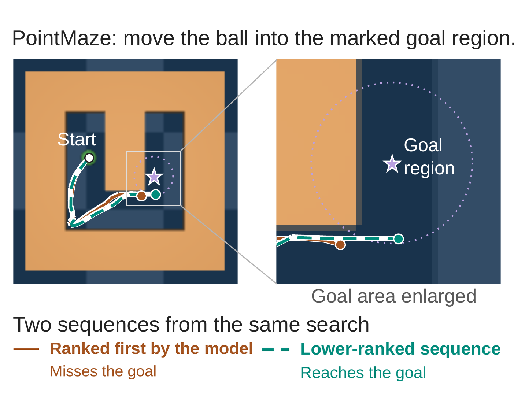

Zhengshu Zhang
My research asks when a learned world model genuinely supports robot planning, and how to tell when it only appears to.
I’m a master’s student in Spatial Data Science at the University of Southern California, graduating in December 2026, and I am applying for PhD study beginning Fall 2027.
I work with Erdem Bıyık at USC Viterbi on multi-robot motion planning, and with Zhiyuan Li at Aalto University on world models. One line repairs multi-robot trajectories that have become infeasible, without planning them again from scratch. The other audits whether a learned model’s ranking of candidate actions can be trusted. With Itay Hen at USC’s Information Sciences Institute and Siqin Wang at the Spatial Sciences Institute, I have worked on graph algorithms for planning, from route search on transit networks to tree covers for spin-glass optimization.
Education
University of Southern California
M.S. · Spatial Data Science
Sichuan Agricultural University
B.Eng. · Food Quality and Safety
Experience
USC Viterbi School of Engineering
Volunteer Researcher · with Erdem Bıyık
Multi-robot motion planning: repairing infeasible trajectories without re-planning.
USC Spatial Sciences Institute
Research Assistant · with Siqin Wang
Route retrieval on transit networks and one-year-ahead wildfire forecasting.
USC Information Sciences Institute
Research Assistant · with Itay Hen
Tree covers for spin-glass optimization.
USC Spatial Sciences Institute
Course Grader · with Yi Qi
Spatial Data Science.
What the work looks like.
Repair, not replan.
Robots cross a cluttered map. When their trajectories conflict, RIFT deforms them locally instead of planning again, and every endpoint stays fixed.

ARC-Bench · PointMazeRanked first, and wrong.
Two action sequences from the same search. The world model ranks the one that misses the goal above the one that reaches it. ARC-Bench measures how often that happens, with the candidates fixed before the model runs.
The score has to earn the plan.
My work connects world-model evaluation, physical diagnosis, and multi-robot planning.
A learned model scores candidate actions and a planner acts on the score. I measure whether the score picks the right candidate before the planner is allowed to trust it, and I build planners that repair a plan instead of discarding it.
How I think about planning with learned models
Most of my work starts from one habit. Before a planner is allowed to act on a learned score, I ask whether the score would have picked the right candidate on its own. A planner that searches and replans can succeed even when the model underneath it is wrong, so success alone does not answer the question.
ARC-Bench, with Zhiyuan Li at Aalto University, asks it of latent world models. The candidate action sequences are fixed before the model runs, so the model’s ranking is measured apart from the planner’s search. On the released JEPA-WM checkpoints the top-scored candidate is suboptimal on 96.8% of Push-T anchors. Closed-loop replanning hides this: forcing the planner to commit to longer open-loop blocks drops PointMaze success from 89.6% to 61.8%.
A second study asks the same question of the evidence a policy could gather. I build MuJoCo benchmarks in which two states look identical but differ in friction or actuator headroom, so the right action cannot be read from a single frame. A frozen decoder reaches 84.4% accuracy, and every error falls where the full trajectory is needed. A linear model that reads only the step-by-step increments of that trajectory recovers the right choice, so the evidence is there and the decoder does not use it.
RIFT, with Yimin Tang and Erdem Bıyık at USC, is the planning side of the same instinct. When a multi-robot plan becomes infeasible, RIFT deforms it locally instead of planning again, and every robot’s endpoints stay exact. The coordination step is a quadratic program with one row per active inter-robot conflict, so its size follows the conflicts rather than the team. On a public 30-instance benchmark of cluttered environments, RIFT and db-ECBS tie at first order, 29 of 30 each. At second order RIFT still solves 29 of 30 while db-ECBS solves 16 and db-CBS 10, and the price is solution quality rather than time.
The same habit runs through my work with Siqin Wang at USC’s Spatial Sciences Institute. A bus-route benchmark grounded in GTFS data retrieves alternative routes and reranks them by the stops they serve, and the gain is reported against shortest-path baselines. A wildfire-forecasting benchmark ranks map cells under an area budget, with spatially blocked validation. With Itay Hen at USC’s Information Sciences Institute I worked on tree covers for spin-glass optimization, where the trade-off between coverage and cost is measured against a legacy baseline.
Two things hold this together. I build negative controls that must fail before a check is trusted, and I trace every reported number to its source file. Both completed studies report negative primary results, and I report them as such. The question I want to work on next is how a planner should decide, online, when to trust a learned world model and when to repair the plan it already has.
-
Preprint · 2026
ARC-Bench: Closed-Loop Replanning Masks Broken Action Ranking in Frozen JEPA World Models
Zhengshu Zhang, Zhiyuan Li
-
Preprint · 2026
When Does Test-Time Physical Diagnosis Pay? A Frozen Policy Buys Evidence It Never Reads
Zhengshu Zhang
-
In preparation
RIFT: Repair of Infeasible Fixed-Endpoint Trajectories for Multi-Robot Kinodynamic Planning Without Re-planning
Zhengshu Zhang, Yimin Tang, Erdem Bıyık
-
Manuscript
Stop-Aware Reranking for Alternative Bus Routes: A GTFS-Grounded GeoAI Benchmark and LA28 Application
Zhengshu Zhang, Siqin Wang
In final revision
-
Manuscript
CINDER: Chronology-Aligned, Imbalance-Aware Neighborhood-Dynamic Encoding with Area-Budgeted Ranking for Annual Wildfire Forecasting
Zhengshu Zhang et al., with Siqin Wang’s group
In progress